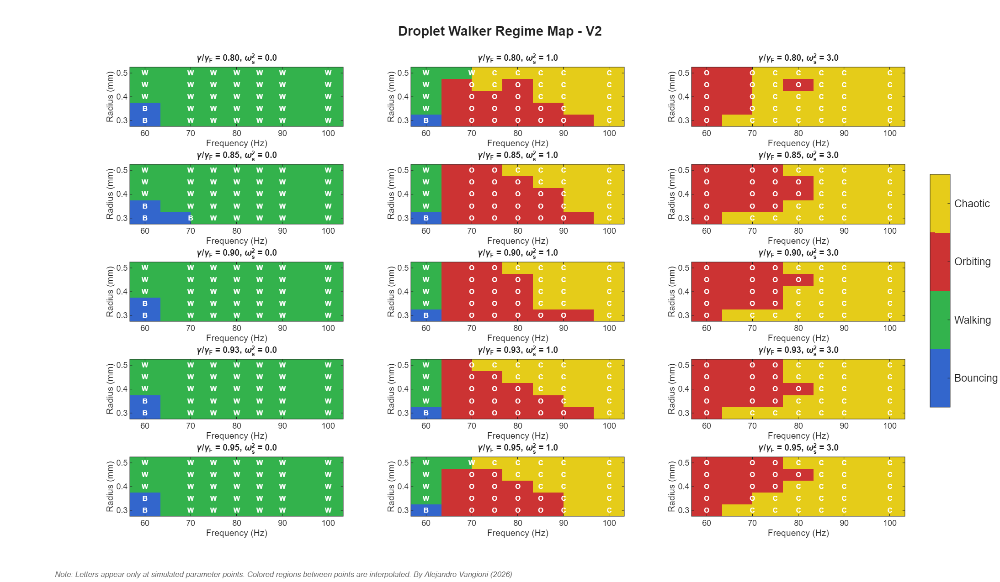
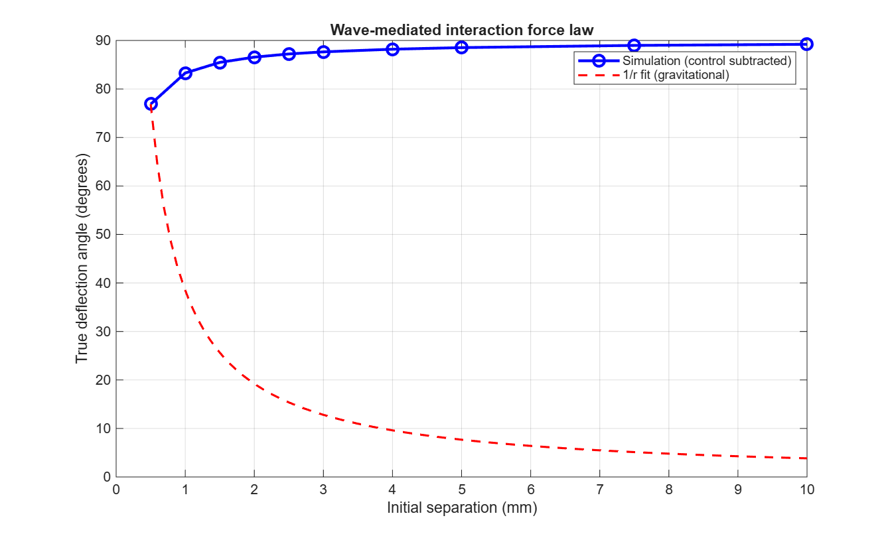

Abstract
A millimetric droplet bouncing on a vibrating fluid bath can self propel by interacting with the wave field generated by its own past impacts, a macroscopic, classical system exhibiting behaviours once thought exclusive to the quantum realm. This project implements the stroboscopic trajectory equation of Oza, Rosales & Bush (2013) as a six-subsystem Simulink model, solving the full gravity–capillary dispersion relation and a spatiotemporally damped wave-memory field from first principles. A 525 run sweep over driving frequency, droplet radius, forcing ratio, and confinement strength yields regime maps of the walker's dynamical states; supervised classifiers trained on eight trajectory features reach up to 99.3% cross-validated accuracy. Lyapunov divergence tests then show that trajectories initially labelled "chaotic" are in fact stable wobbly orbits, the harmonically confined stroboscopic model exhibits no genuine chaos, consistent with the literature placing chaos in the rotating frame. The model is extended to two droplets coupled solely through their shared wave field. A controlled deflection experiment shows that activating a second droplet bends the first droplet's exit angle from 90.0° to 166.9° (a 76.9° deflection) with a measured cross-force of ≈18% of the self propulsion force and phase locking at π between the droplets: a direct demonstration of wave mediated interaction between particles with no contact and no imposed potential. The discussion frames these results within the open question of how far pilot-wave mechanics can serve as a unifying analogue for both quantum-like and orbital dynamics.
Keywords: pilot-wave hydrodynamics · bouncing droplets · Faraday waves · stroboscopic approximation · regime classification · Lyapunov analysis · wave-mediated interaction · Simulink
1Introduction
In 2005, Couder and Fort observed that a droplet bouncing on a vertically vibrated silicone oil bath could spontaneously begin to walk: propelled horizontally by the slope of the wave field left behind by its own previous impacts [5]. The droplet and its wave are inseparable: the wave guides the droplet, the droplet sustains the wave. This is the only known macroscopic realisation of a pilot-wave dynamics of the kind envisioned by de Broglie, and the system has since been shown to reproduce analogues of quantised orbits, tunnelling, and diffraction [6].
This project asks two questions. First, can the full single-droplet dynamics (the bouncing-to-walking transition, orbital motion under confinement, and the presence or absence of chaos) be captured in a block-oriented Simulink model built from the published theory, and mapped systematically across parameter space? Second, can the same model be extended to two droplets, so that the interaction between them is carried entirely by the wave field, with no direct force term, and if so, is that interaction strong enough to measurably deflect a trajectory?
The second question carries the motivating long-term hypothesis of this work: that wave-mediated attraction between droplets is a structural analogue of gravitation, and that wave–particle duality and orbital mechanics may be two regimes of a single underlying mechanism. That hypothesis is not tested here; what is tested is its necessary precondition, that a wave field alone can produce a coherent, quantifiable effective force between particles.
2Theoretical background
2.1The stroboscopic trajectory equation
Below the Faraday threshold, each droplet impact deposits a standing circular wave that decays over a finite memory time. Averaging over the fast vertical bouncing yields the stroboscopic approximation of Oza, Rosales & Bush [1]: the horizontal position xp(t) of the droplet obeys
where D is a time-averaged drag coefficient and the wave field h is the superposition of the waves generated by all past impacts:
Here J₀ is the zeroth-order Bessel function, kF the Faraday wavenumber, TF the Faraday period, and Me the memory parameter, which diverges as the forcing acceleration γ approaches the Faraday threshold γF. High memory means the droplet "feels" a longer stretch of its own history — the source of all the rich dynamics.
2.2The dispersion relation
The Faraday wavenumber is obtained from the full gravity–capillary dispersion relation, which for this system reduces to a cubic in k:
solved exactly via Cardano's formula in the model's parameter block. This step matters: a commonly used simplified expression for kF was found during development to overestimate the wavenumber by roughly two orders of magnitude, which silently corrupts every downstream quantity. Solving the cubic exactly, with the wave amplitude prefactor assembled term-by-term from Turton, Couchman & Bush [2], proved essential for quantitative agreement with the published regime boundaries.
2.3Confinement and rotation
Two external force terms extend the free-walker equation: a harmonic confinement −mωs²x (a "spring" drawing the walker toward an origin), and a Coriolis term −2m Ω × ẋp for dynamics in a rotating frame. A finding of this project, consistent with Tambasco et al. [4], is that the stroboscopic model under harmonic confinement alone does not exhibit chaos in the explored range; the rotating-frame configuration is the established route to chaotic dynamics and is implemented as ongoing work (§6).
3Methods
3.1Model architecture
The model (pv40) is organised as six Simulink subsystems, deliberately block-oriented so that the physics remains legible at the diagram level:
| Subsystem | Role | Implementation note |
|---|---|---|
| Parameters | Physical constants, derived quantities | Exact cubic dispersion solution (Cardano) |
| Wave Field Memory | Evaluates Eq. (2) over stored impact history | MATLAB Function block; persistent trajectory buffer; polynomial J₀ approximation [7] (codegen-safe) |
| Vertical Bounce | Impact phase and contact dynamics | Internal Euler sub-stepping at 1 MHz to resolve the stiff contact discontinuity |
| Horizontal Dynamics | Integrates Eq. (1) | Standard continuous blocks |
| External Forces | Confinement / Coriolis terms | Switchable per experiment |
| Logging & Scopes | Trajectory and force capture | Data Inspector archiving disabled for long sweeps |
Two implementation findings are worth recording. First, the stiff vertical-bounce discontinuity defeated every purely block-based formulation attempted; only a self-contained MATLAB Function with internal sub-stepping integrated it stably. Second, impact-phase modulation of the wave coupling (an effective coefficient Ceff derived from the local wave height, calibrated at p_phase = 0.03) was required to reproduce regime behaviour quantitatively. The wave-memory buffer retains the most recent Nmax = 3000 impacts. In non-dimensional form the horizontal dynamics reduce to κẍ + ẋ = −β∇h − ωs²x, and the validated baseline parameters are:
| Quantity | Value | Note |
|---|---|---|
| Faraday wavenumber kF | ≈ 1320 m⁻¹ | Exact cubic solution (Eq. 3) |
| Faraday wavelength λF | ≈ 4.75 mm | Sets the interaction length scale |
| Faraday period TF | 0.025 s | Subharmonic of driving |
| Faraday threshold γF | 4.5 g | Empirical constant |
| Memory Me at γ/γF = 0.95 | ≈ 22.9 | Diverges as γ → γF |
| Dimensionless mass κ | ≈ 0.23 | Stroboscopic coefficients per [1, 2] |
| Wave-force coefficient β | ≈ 3.67 |


3.2Parameter sweep and classification
The single-droplet model was swept over 525 parameter combinations: seven driving frequencies (60–100 Hz), five droplet radii (0.30–0.50 mm), five forcing ratios (γ/γF = 0.80–0.95), and three confinement strengths (ωs² = 0, 1.0, 3.0). Forcing ratios above ≈0.95 were excluded: the memory parameter diverges near threshold and the simulation becomes numerically unreliable before it becomes physically interesting. Eight features were extracted from each trajectory: mean and standard deviation of speed, mean and standard deviation of orbital radius, net displacement, mean curvature, angular range, and speed-oscillation ratio — chosen so that each regime is discriminated by at least one feature (e.g. near-zero speed isolates bouncing; angular range above 2π with stable radius isolates orbiting). Trajectories were auto-labelled by physics-based rules and used to train classifiers in the MATLAB Classification Learner under 5-fold cross-validation.
The regime labels were then stress-tested directly: Lyapunov divergence tests ran paired simulations from initial conditions separated by 10⁻⁶, across multiple parameter combinations, memory-buffer sizes up to 50,000, and forcing ratios up to 0.99, plotting trajectory separation on a logarithmic scale to detect exponential divergence.
3.3Two-droplet extension and the deflection experiment
The two-droplet model duplicates the dynamics blocks and couples the droplets through a single shared wave field, where each droplet feels the gradient of the sum of both impact histories. No direct interaction term exists anywhere in the model.
The central experiment is a controlled deflection test, designed like light bending past a star: droplet B is pinned in place (its horizontal dynamics locked by a high restoring stiffness) so it acts as a fixed wave source, while droplet A is launched past it with a small initial velocity. The experiment is run twice, once with B bouncing (sourcing waves) and once with B silenced via a gain on its bounce signal. The deflection attributable to wave-mediated interaction is the difference between the two exit angles: a subtraction design that isolates the cross-force from A's self-generated dynamics.
4Results
4.1Single-droplet regime maps
The sweep recovers the canonical structure of the walker phase diagram: a bouncing region at low memory, a walking transition as γ/γF increases, and orbital states under confinement, with the regime boundaries shifting with droplet radius and driving frequency in the directions expected from the Moláček–Bush impact model [3]. The map is rendered as a multi-panel grid, one panel per (γ/γF, ωs²) pair, with frequency and radius spanning each panel, so that the role of each parameter is separable by eye. Confinement strength and driving frequency emerge as the primary determinants of regime selection, with wave memory playing a secondary, modulatory role.


Supervised classifiers trained on the eight trajectory features separate the labelled regimes almost perfectly:
| Classifier | Validation accuracy |
|---|---|
| Fine KNN | 99.3% |
| Weighted KNN | 99.3% |
| Narrow Neural Network | 99.3% |
| Fine Decision Tree | 98.9% |
| Bagged Trees | 98.9% |
That a single fine decision tree matches ensemble methods indicates the regimes occupy well-separated volumes in feature space (the boundaries in Figure 2 are sharp physical transitions, not gradual crossovers blurred by the classifier.)

4.2No chaos under harmonic confinement: a negative result
Trajectories initially labelled "chaotic" were subjected to Lyapunov divergence testing. Across every parameter combination examined (including memory buffers up to 50,000 impacts and forcing ratios up to 0.99) paired trajectories showed flat or converging separation, never the exponential divergence that defines chaos. The "chaotic" class was thereby identified as irregular but stable orbiting ("wobbly orbits"), and the verified single-droplet map contains three genuine regimes: bouncing, walking, and orbiting.
This negative result is consistent with Tambasco et al. [4], who locate the onset of chaos in orbital pilot-wave dynamics specifically in the rotating frame (Coriolis forcing), not under a harmonic spring. A Coriolis-frame variant of the model to demonstrate that route to chaos is implemented as ongoing work (§6).
4.3Wave-mediated two-droplet interaction
The deflection experiment produced the clearest single result of the project:

The deflection curve rises with separation rather than falling, which initially looks paradoxical for an attractive interaction. The resolution is geometric: at larger initial separation droplet A traverses a longer stretch of B's wave field before exiting, so the accumulated angular change grows even as the instantaneous force weakens with distance. Deflection angle at fixed initial velocity therefore measures total exposure, not force magnitude (to recover the underlying force law, the cross-force must be sampled at fixed path length or phase-locked, identified as future work.) The unambiguous physical claim that survives this caveat is the close-approach result: a 76.9° wave-mediated deflection at 0.5 mm.
Two further signatures confirm genuine coupling rather than coincidental motion. First, the droplets' bounce phases lock at π, antiphase synchronisation through the shared field (Figure 5). Second, under weak confinement (ωs² = 1.0) the pair settles into bound periodic orbital states.

Force-law measurement: an honest methods finding. The deflection experiment establishes that the interaction exists and is strong at close range; extracting a continuous force-versus-separation law, however, is harder. Net force sampled directly from the discrete wave-memory sum is dominated by sensitivity to bounce phase, varying non-monotonically at fine separation resolution. This is an understood structural feature of the discrete-bounce model, not a bug, as a clean force law requires phase-locked sampling or ensemble averaging over initial bounce phases, identified as the immediate next measurement. The expected signature, given the Bessel-form wave field, is an oscillatory decay with sign changes near the J₁ zeros (≈2.9, 5.3, and 7.7 mm at λF ≈ 4.75 mm) - a richer prediction than a monotonic power law.
5Discussion
The single-droplet results establish that a block-oriented Simulink implementation of the stroboscopic theory is quantitatively faithful: it reproduces the published regime structure, and it does so transparently, with each physical mechanism visible as a subsystem. The two-droplet result goes further. It demonstrates, within this model, that a shared wave medium is sufficient to produce an effective attractive interaction between particles that is measurable, repeatable, and large relative to the system's intrinsic forces.
A recurring conceptual point deserves emphasis: the wave field is one surface. The concentric rings seen from above and the undulating profile seen from the side are the same deformed sheet, and "many waves" means temporal superposition, where every bounce stamps a fresh ripple onto the same surface, and the field at any instant is the fading sum of the recent past. Memory, in this system, is geometry.
The self-orbiting states observed under confinement, a droplet circling a point at which nothing material sits, offer a related interpretive thread: the orbit centre is a self-organised minimum of the droplet's own wave field, a massless node that nonetheless organises the motion. Whether such structures bear more than a poetic resemblance to Lagrange points or dark-matter phenomenology is precisely the kind of question the framework is being built to make precise rather than rhetorical.
6Limitations and future work
Limitations. The model inherits the assumptions of the stroboscopic approximation: vertical dynamics are averaged, the wave field uses a far-field Bessel form with polynomial approximation, and no comparison against laboratory data has been performed. The forcing ratio is capped at ≈0.95 by numerical divergence of the memory parameter. The two-droplet force-versus-separation law remains unmeasured: the discrete-bounce wave sum is intrinsically sensitive to bounce phase, so single-shot measurements at each separation do not converge to a clean curve (§4.3). An earlier persistent-state artefact (wave-memory buffers surviving between sequential runs) was diagnosed and resolved with a start-time self-reset in the wave-field function; results above postdate that fix.
Future work, in order of priority:
(i) the force-law measurement via ensemble averaging over initial bounce phases (and per-separation active/inactive subtraction), testing the predicted Bessel-zero sign structure; (ii) a quantised-orbit study: sweeping initial separations under weak confinement to test whether bound two-droplet orbits lock only at radii set by λF- quantisation emerging from a classical system; (iii) the rotating-frame (Coriolis) configuration to demonstrate chaos along the established route [4]; (iv) validation of single-walker speed against published experimental values; and (v) a dimensionless reformulation making the scaling-constant correspondence of §5 explicit and testable.
References
- Oza, A. U., Rosales, R. R. & Bush, J. W. M. (2013). A trajectory equation for walking droplets: hydrodynamic pilot-wave theory. Journal of Fluid Mechanics, 737, 552–570.
- Turton, S. E., Couchman, M. M. P. & Bush, J. W. M. (2018). A review of the theoretical modeling of walking droplets: toward a generalized pilot-wave framework. Chaos, 28, 096111.
- Moláček, J. & Bush, J. W. M. (2013). Drops walking on a vibrating bath: towards a hydrodynamic pilot-wave theory. Journal of Fluid Mechanics, 727, 612–647.
- Tambasco, L. D., Harris, D. M., Oza, A. U., Rosales, R. R. & Bush, J. W. M. (2016). The onset of chaos in orbital pilot-wave dynamics. Chaos, 26, 103107.
- Couder, Y. & Fort, E. (2006). Single-particle diffraction and interference at a macroscopic scale. Physical Review Letters, 97, 154101.
- Bush, J. W. M. (2015). Pilot-wave hydrodynamics. Annual Review of Fluid Mechanics, 47, 269–292.
- Abramowitz, M. & Stegun, I. A. (1964). Handbook of Mathematical Functions. National Bureau of Standards. (Polynomial approximations of J₀.)